Tutorial Topic 03 Set 01 - Data Visualization for Business Analytics¶
Learning Goals¶
By the end of this tutorial, you should be able to:
- Explain how different
ggplot2visualization techniques reveal patterns in the Melbourne housing market that would be difficult to see in tables or raw numbers. - Use
ggplot2to create histograms, and scatterplots that analyze relationships between property prices, location, and dwelling types. - Apply transformations such as log scales, proportions, and faceting to improve the interpretability of price distributions and spatial trends.
- Customize
ggplot2plots using themes, color palettes, and annotations to enhance clarity and storytelling. - Evaluate and compare visualization approaches, identifying which effectively communicate insights about housing price trends and spatial patterns.
- Build and refine a visual analysis workflow that could inform practical decision-making for home buyers, investors, or urban planners
The Business Challenge¶
The Topic: Understanding Melbourne’s Housing Market¶
Melbourne’s real estate market is one of the most dynamic in Australia. Property prices are influenced by several factors, including location, dwelling type, and proximity to the Central Business District (CBD). Buyers, sellers, and policymakers constantly analyze housing trends to make informed decisions. Understanding these trends is crucial in a $2 trillion+ housing market, where even small fluctuations in pricing expectations can have significant financial impacts.
A key question we will explore is: How do property prices vary by region, dwelling type, and location? By analyzing real estate data, we can identify patterns that help explain the drivers of Melbourne’s housing prices and their implications for different stakeholders in the market.
The Data: The Melbourne Housing Market Dataset¶
We will use a dataset containing real estate sales data from Melbourne. The dataset provides insights into housing trends and includes key variables that influence property prices.
The dataset captures the property location within broader metropolitan regions (regionname), allowing us to compare trends across different areas. It also includes the type of dwelling, classified as House (h), Townhouse (t), or Apartment (u), enabling us to assess price differences based on housing type. The sale price (price) provides a measure of market value, while the distance to the CBD (distance) helps analyze the impact of proximity to the city center on property prices.
Similar datasets are widely used by real estate analysts, banks, and property investors to assess housing trends, predict future movements, and guide investment decisions. Through this tutorial, we’ll work with real-world data to uncover patterns and develop a deeper understanding of Melbourne’s property market. Let’s dive in!
Where we’re headed¶
Just a few lines of R code transform numbers to data visualizations.
From this:
| type <chr> | address <chr> | postcode <dbl> | price <dbl> | distance <dbl> | regionname <chr> |
|------------|------------------|----------------|-------------|----------------|------------------|
| House | 85 Turner St | 3067 | 1480000 | 2.5 | Northern Metro |
| House | 25 Bloomburg St | 3067 | 1035000 | 2.5 | Northern Metro |
| House | 5 Charles St | 3067 | 1465000 | 2.5 | Northern Metro |
| House | 40 Federation La | 3067 | 850000 | 2.5 | Northern Metro |
| House | 55a Park St | 3067 | 1600000 | 2.5 | Northern Metro |
| House | 129 Charles St | 3067 | 941000 | 2.5 | Northern Metro |
| House | 124 Yarra St | 3067 | 1876000 | 2.5 | Northern Metro |
| House | 98 Charles St | 3067 | 1636000 | 2.5 | Northern Metro |
| House | 217 Langridge St | 3067 | 1000000 | 2.5 | Northern Metro |
| Townhouse | 18a Mollison St | 3067 | 745000 | 2.5 | Northern Metro |
to this:
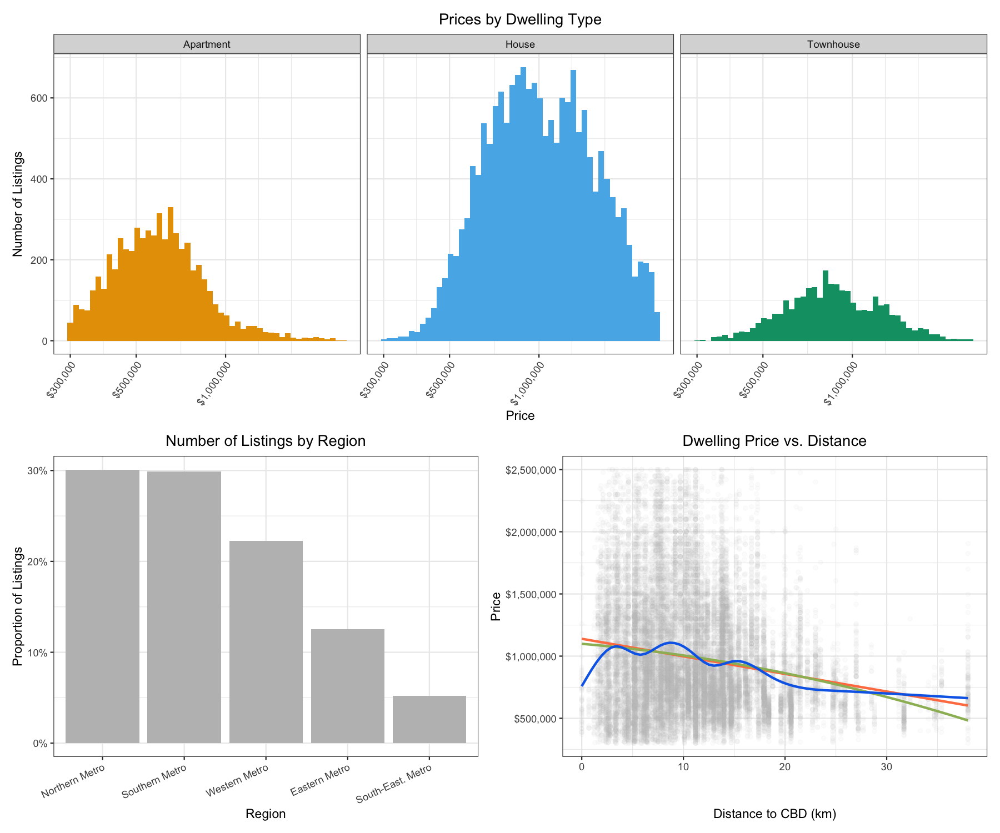
Loading the Libraries and Data¶
R packages for today¶
library(tidyverse) # for plotting, includes ggplot
library(patchwork) # for combining multiple plots into subfigures
library(scales) # for formatting axis scales
library(ggokabeito) # color blind friendly color palette -- this course's default
Loading the Data in R¶
housing <- read_csv("data/melbourne_housing.csv")
Prepare these Exercises before Class¶
Prepare these exercises before coming to class. Plan to spend 45 minutes on these exercises.
Exercise 1: Understanding ggplot2 Syntax¶
Consider the code below:
ggplot(housing, aes(x = regionname)) +
geom_bar() +
labs(
x = "Region",
y = "Count",
title = "Number of Listings by Region"
)
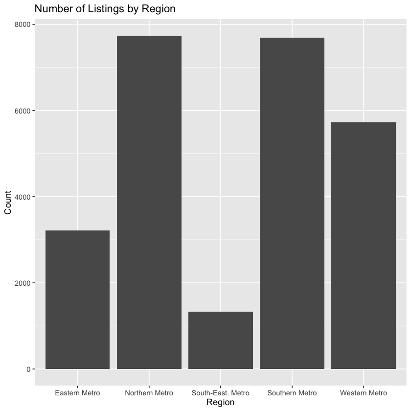
(a) What does ggplot(housing, aes(x = regionname)) do?
(b) What is the role of aes(x = regionname) in this code?
(c) What does geom_bar() add to the plot?
(d) What does labs() do?
(e) In this code, what does the + operator do?
(f) Run the code above to produce the bar plot.
Solution
(a) ggplot(housing, aes(x = regionname)) starts a plot using the housing dataset and maps the variable regionname to the x-axis.
(b) aes(x = regionname) defines the aesthetic mapping. It tells ggplot2 which variable from the dataset should be shown on the x-axis.
(c) geom_bar() adds bars to the plot. It creates a bar plot that counts how many observations fall into each category of regionname.
(d) labs() adds or changes labels on the plot, such as the x-axis label, y-axis label, and title.
(e) The + operator adds new layers or components to the plot. In ggplot2, we build plots step by step by adding pieces together.
(f) When you run the code, it produces a bar plot showing the number of listings in each region.
Exercise 2: Visualizing the distribution of Prices by Dwelling Type¶
By the end of this exercise, your plot should look similar to this one:
(a) Why is a histogram useful for understanding price distributions? What insights can we gain from plotting price distributions separately for each dwelling type?
Tip - What is a Histogram?
-
A histogram is a visualization that represents the distribution of numerical data by dividing values into bins and counting the number of observations in each bin. Unlike a bar plot, which displays categorical data, a histogram is used for continuous variables like price, age, or distance.
-
Histograms help identify patterns in data, such as skewness, outliers, and central tendencies, making them a crucial tool for understanding how values are distributed in a dataset.
(b) Use the starter code below to create a basic histogram of house prices. Replace YOUR_VARIABLE_NAME with the correct variable.
ggplot(housing, aes(x = YOUR_VARIABLE_NAME)) +
geom_histogram(bins = 50)
(c) Extend the plot above by adding labels to the x-axis, y-axis, and title using the labs() function.
ggplot(housing, aes(x = YOUR_VARIABLE_NAME)) +
geom_histogram(bins = 50) +
labs(
x = "YOUR_X_AXIS_LABEL",
y = "YOUR_Y_AXIS_LABEL",
title = "YOUR_TITLE"
)
(d) Modify the plot so that you create separate histograms for each dwelling type by adding the facet_wrap(~type) layer to the plot
ggplot(housing, aes(x = price)) +
geom_histogram(bins = 50) +
labs(
x = "YOUR_X_AXIS_LABEL",
y = "YOUR_Y_AXIS_LABEL",
title = "YOUR_TITLE"
) +
YOUR_CODE_HERE
(e) What does the histogram tell you about price differences between dwelling types?
Solution
(a) Why is a histogram useful here?
A histogram is useful for understanding the distribution of prices across properties. It shows how prices are spread out, where most of the listings fall, and whether there are outliers or skewed distributions.
- By plotting prices separately for each dwelling type, we can:
- Compare typical price ranges across types (e.g., Units vs. Houses).
- Spot differences in distribution shape (e.g., skewness, bimodality).
- Better understand market segmentation: do certain types dominate in certain price brackets?
(b)
ggplot(housing, aes(x = price)) +
geom_histogram(bins = 50)
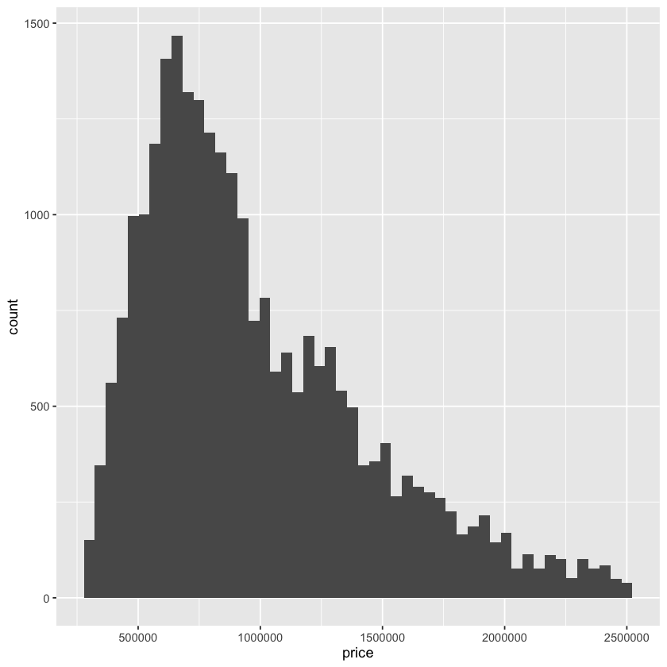
(c)
ggplot(housing, aes(x = price)) +
geom_histogram(bins = 50) +
labs(
x = "Price",
y = "Number of Listings",
title = "Distribution of Dwelling Prices"
)
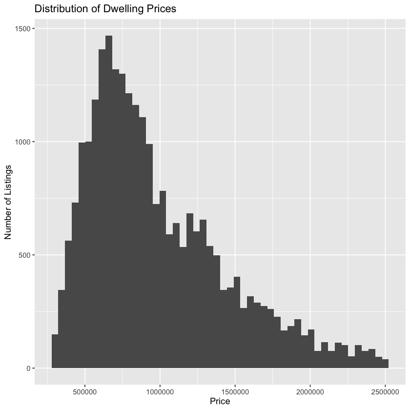
(d)
ggplot(housing, aes(x = price)) +
geom_histogram(bins = 50) +
labs(
x = "Price",
y = "Number of Listings",
title = "Distribution of Dwelling Prices"
) +
facet_wrap(~ type)
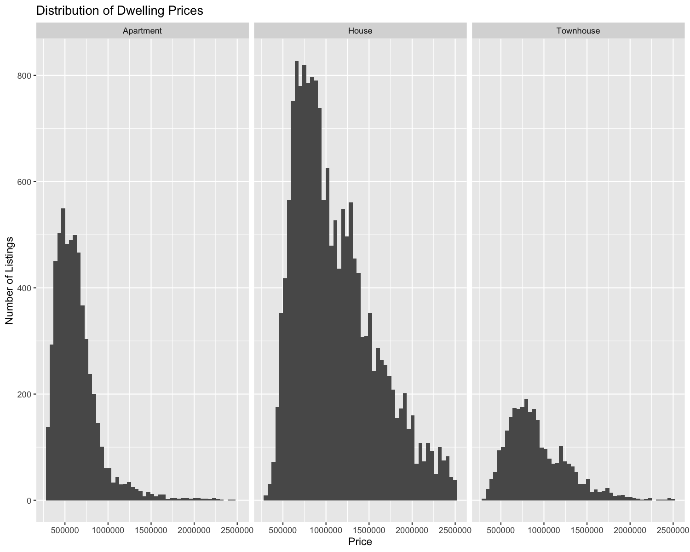
(e)
The histogram reveals clear differences in price distributions across dwelling types:
- Apartments have the lowest prices, with most listings clustered below $1 million. The distribution is strongly right-skewed, indicating that while most apartments are affordable, a few are much more expensive.
- Houses span a much wider price range and dominate the middle of the market. Most listings fall between $500,000 and $1.5 million, but the distribution again shows right skew, with a notable number of high-end listings exceeding $2 million.
- Townhouses are tightly concentrated around $750,000 to $1.25 million, with fewer extreme values. Their distribution is narrower and more symmetric compared to the other two dwelling types.
Key takeaways:
- Houses are the most numerous and show the greatest variation in price.
- Apartments tend to be lower-priced, making them more accessible to entry-level buyers or investors.
- Townhouses occupy a mid-range niche, potentially appealing to buyers seeking a balance between space and affordability.
Exercise 3: The Price - Distance Relationship¶
By the end of this exercise, your plot should look similar to this one:
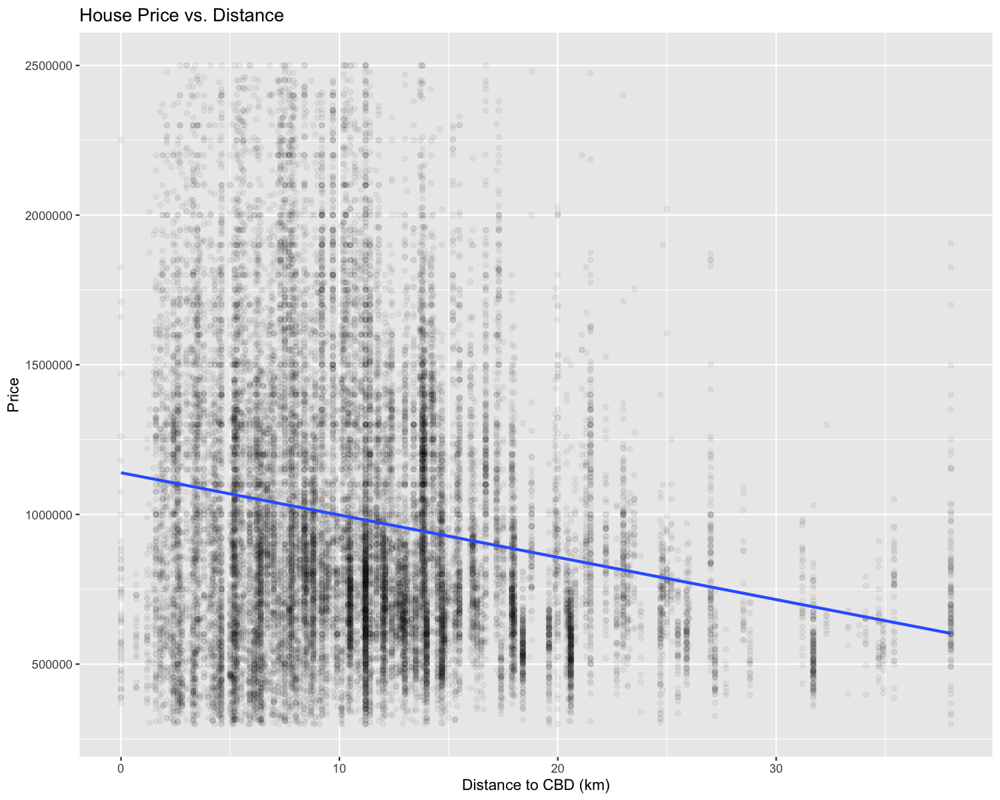
(a) Why might we expect a relationship between price and distance to the CBD?
(b) Use the starter code below to build a scatter plot of price vs. distance, replacing YOUR_VARIABLE_NAME with the correct column names.
TipWhat is a Scatter Plot?
A scatter plot is used to visualize the relationship between two continuous variables by plotting individual data points. Each dot represents one observation, helping identify patterns, clusters, and trends. In this case, it allows us to explore how house prices change with distance.
ggplot(housing, aes(x = YOUR_VARIABLE_NAME, y = YOUR_VARIABLE_NAME)) +
geom_point()
(c) Since we have a large number of data points, many overlap, making it difficult to distinguish individual observations. Modify the geom_point() function to reduce over-plotting by adjusting the alpha value. Experiment with different values (e.g., 0.1, 0.05, 0.01) and describe how each affects the visualization.
ggplot(housing, aes(x = YOUR_VARIABLE_NAME, y = YOUR_VARIABLE_NAME)) +
geom_point(alpha = YOUR_NUMBER)
(d) We can better understand the relationship by adding a statistical transformation to the plot. Add a fitted line using geom_smooth(method = "lm", se = FALSE).
ggplot(housing, aes(x = YOUR_VARIABLE_NAME, y = YOUR_VARIABLE_NAME)) +
geom_point(alpha = YOUR_NUMBER) +
YOUR_CODE_HERE
(e) Finally, add labels to the x-axis, y-axis, and title using the labs() function. Adjust the x- and y-axis scales as you deem appropriate.
ggplot(housing, aes(x = YOUR_VARIABLE_NAME, y = YOUR_VARIABLE_NAME)) +
geom_point(alpha = YOUR_NUMBER) +
YOUR_CODE_HERE +
labs(
x = "YOUR_LABEL",
y = "YOUR_LABEL",
title = "YOUR_TITLE"
)
(f) What does the scatter plot reveal about the relationship between house prices and distance to the CBD? How does the line help interpret this relationship?
Solution
(a). Why might we expect a relationship between price and distance to the CBD?
In most cities, being closer to the Central Business District (CBD) is associated with higher property prices due to:
- Better access to jobs, transport, and amenities
- Scarcity of land and high demand in central locations
- Prestige or desirability of inner-city living
As distance from the CBD increases, we often expect prices to fall — although this relationship may not be perfectly linear due to other factors like transport links, school zones, or regional variation.
(b)
ggplot(housing, aes(x = distance, y = price)) +
geom_point()
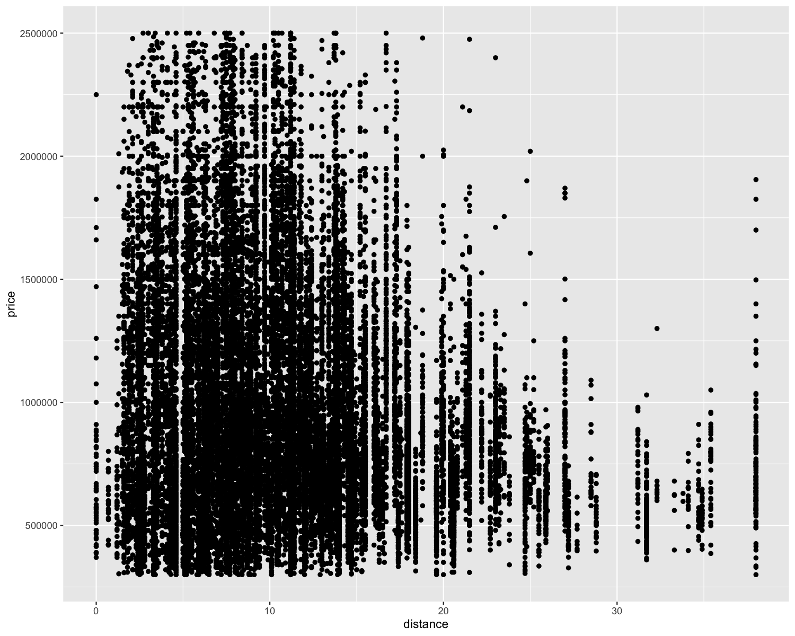
(c)
ggplot(housing, aes(x = distance, y = price)) +
geom_point(alpha = 0.05)
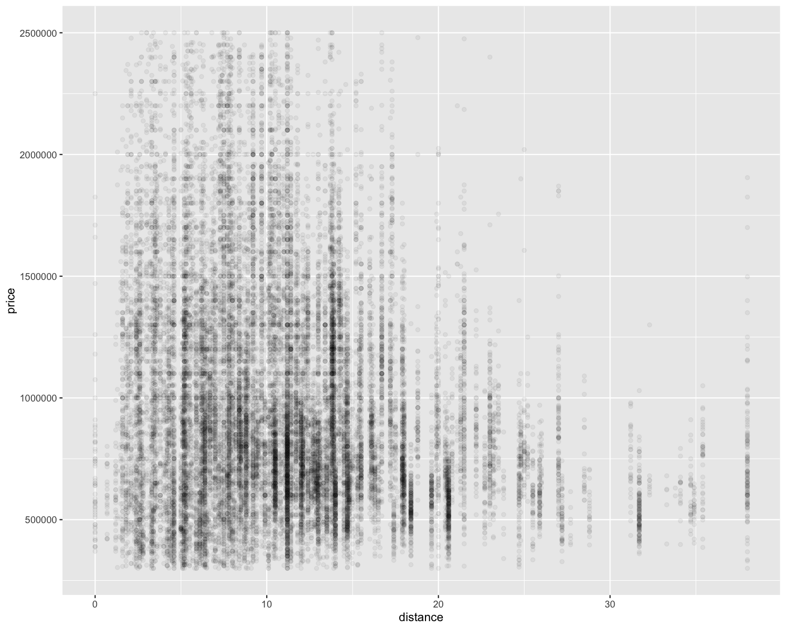
Notes:
- alpha = 0.1: Points are semi-transparent — overlap is reduced but still busy.
- alpha = 0.05: Good balance — dense regions become visibly darker.
- alpha = 0.01: Almost all points are extremely faint; hard to see sparsely populated areas.
Lower alpha values reduce overplotting and help reveal density of data in crowded areas.
(d)
ggplot(housing, aes(x = distance, y = price)) +
geom_point(alpha = 0.05) +
geom_smooth(method = "lm", se = FALSE)
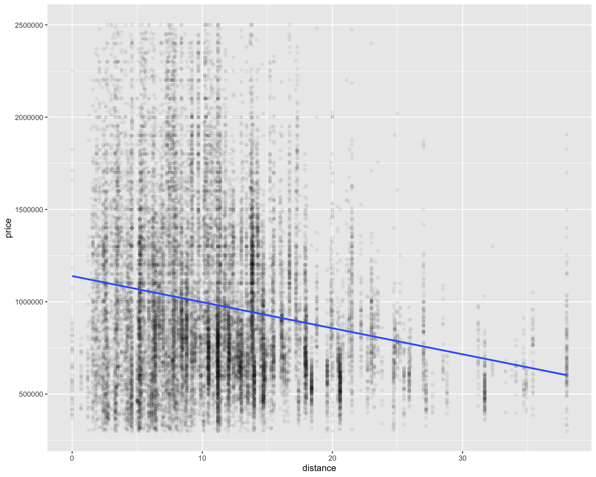
This adds a linear regression line, helping us see the overall trend in how price changes with distance.
(e)
ggplot(housing, aes(x = distance, y = price)) +
geom_point(alpha = 0.05) +
geom_smooth(method = "lm", se = FALSE, linewidth = 1) +
labs(
x = "Distance to CBD (km)",
y = "Price",
title = "House Price vs. Distance"
)
(f) The scatter plot shows a negative relationship between distance from the CBD and house price:
- As distance increases, price tends to decrease
- This is visible in the downward slope of the linear trend line
- There’s also substantial variation in prices at all distances — distance is a strong predictor, but not the only factor
- The line helps summarize the average trend, even in the presence of noisy data
- This supports the idea that proximity to the CBD carries a price premium, though other drivers of housing value are clearly at play
In-Class Exercises¶
You will discuss these exercises in class with your peers in small groups and with your tutor. These exercises build from the exercises you have prepared above, you will get the most value from the class if you have completed those above before coming to class.
Exercise 4: Improving the Price Distribution Plot¶
(a). Together with your peers, propose three changes you want to make to the plot in Exercise 2. Discuss the rationale behind each change and how it might improve the visualization.
(b). Work with your tutor to create an agreed upon list of changes to make to the plot. What steps do you need to take to make these improvements?
(c). Implement the changes suggested in the R code.
Solution
(a) and (b).
Non exhaustive list of potential changes:
Analytical changes
- adding fill = type
- applying the log scale
presentation changes:
- rotated axis text
- color palette
theme_bw()- centered title
Some changes improve the substance of comparison, while others improve clarity and communication.
(c)
# Improved histogram of price by dwelling type
price_hist <- ggplot(housing, aes(x = price, fill = type)) +
geom_histogram(bins = 50) +
# Log-scale the x-axis to handle price skew
scale_x_continuous(
trans = "log10",
labels = scales::dollar
) +
# Add labels and title
labs(
x = "Price",
y = "Number of Listings",
title = "Prices by Dwelling Type"
) +
# Create separate plots for each dwelling type
facet_wrap(~type) +
# Use colorblind-friendly fill palette
scale_fill_okabe_ito() +
theme_bw() + # Rotate x-axis labels for readability
theme(axis.text.x = element_text(angle = 55, hjust = 1)) +
# Center the title
theme(plot.title = element_text(hjust = 0.5))
price_hist
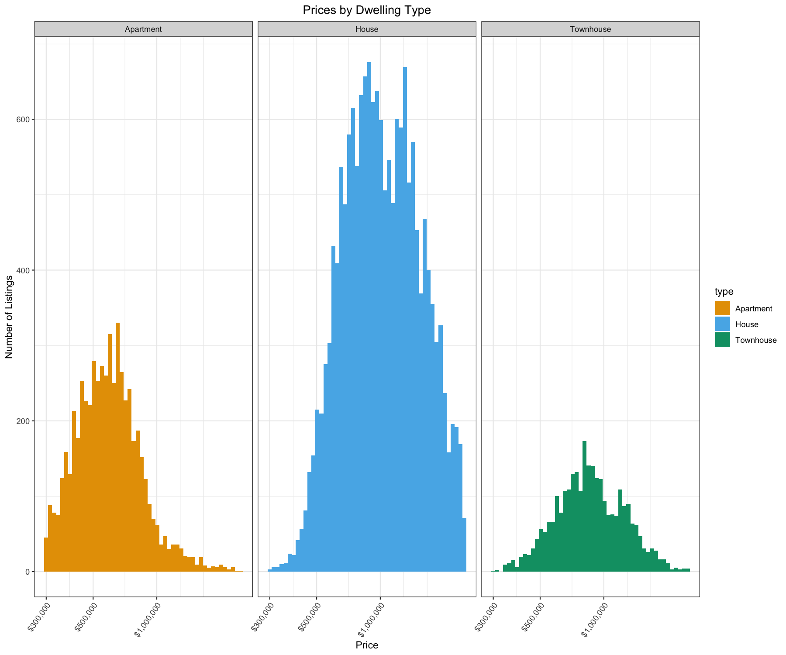
Exercise 5: Improving the Price-Distance Relationship Plot¶
(a). Together with your peers, propose two changes you want to make to the plot in Exercise 3. Discuss the rationale behind each change and how it might improve the visualization.
(b). Work with your tutor to create an agreed upon list of changes to make to the plot. What steps do you need to take to make these improvements?
(c). Implement the changes suggested in the R.
Solution
(a) and (b)
Analytical structure mostly unchanged
- same variables on the axes
- same scatterplot
- same transparency level
But we might want to move away from a linear trend line
Non exhaustive list of potential changes focussed around presentation improvements
- clearer color contrast between points and line
- easier-to-read price axis
- more polished theme and title formatting
(c)
Below we give 3 possible lines for the plot. Based on your discussion with your TA and group, you may have chosen one of these. None of these is “more correct” than others, it depends what you want to show. We recommend against plotting more than one in the same figure, as its hard for managers to read.
# Improved scatterplot: price vs. distance
scttr <- ggplot(housing, aes(x = distance, y = price)) +
# Scatter plot with reduced alpha to handle overplotting
geom_point(alpha = 0.05, color = "grey") +
# Here's alternative lines we could use. Pick ONE.
# 1. stay linear
geom_smooth(
method = "lm",
se = FALSE,
color = "coral",
linewidth = 1
) +
# 2. move to non-linear / quadratic - "one bend"
geom_smooth(
method = "lm",
formula = y ~ poly(x, 2), # Allow one bend in the trend line
se = FALSE,
color = "#9db964",
linewidth = 1
) +
# 3. move to something non-parametric
# The default is a 'loess' polynomial - "many bends"
# Intuitively, think of this as using points in the close neighborhood of each other
# to determine the 'local' slope of the line.
# Note that local slope may violate notions of 'correct' theoretical direction of relationship
geom_smooth(
se = FALSE,
color = "#0b6be9ff",
linewidth = 1
) +
# Format y-axis as dollars
scale_y_continuous(labels = scales::dollar) +
# Add labels and center the title
labs(
x = "Distance to CBD (km)",
y = "Price",
title = "Dwelling Price vs. Distance"
) +
theme_bw() +
theme(plot.title = element_text(hjust = 0.5))
scttr
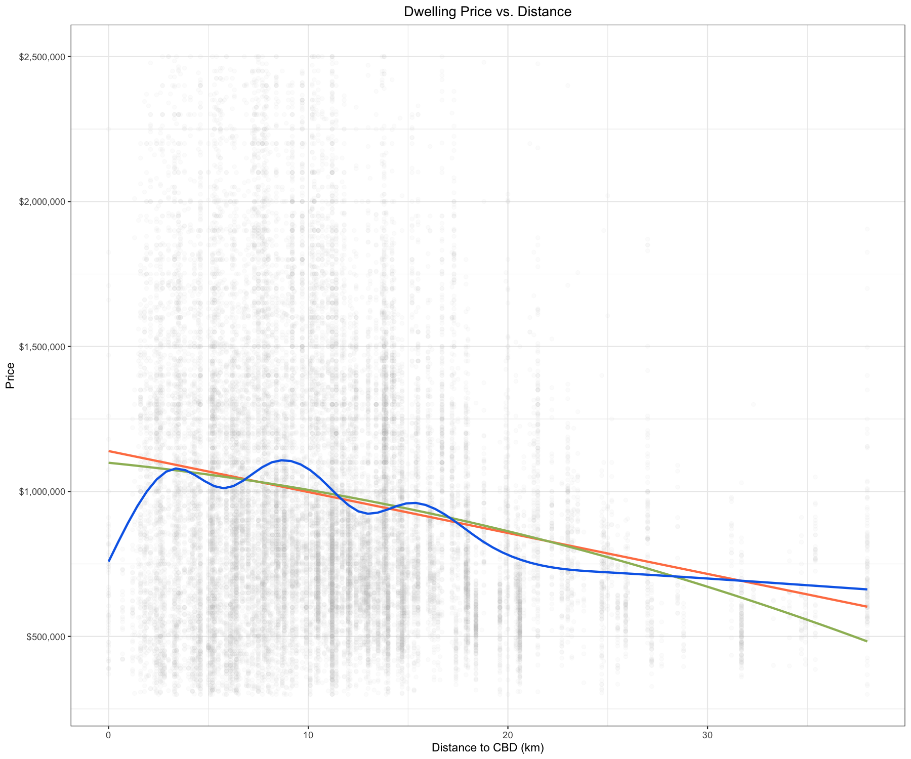
Exercise 6 [Optional, if time]: Improving the Listings by Region Plot¶
(a). Together with your peers, propose two changes you want to make to the plot in Exercise 1. Discuss the rationale behind each change and how it might improve the visualization.
(b). Work with your tutor to create an agreed upon list of changes to make to the plot. What steps do you need to take to make these improvements?
(c). Implement the changes suggested in the R.
Solution
(a) and (b)
Here the biggest improvement is analytical rather than technical
Analytical changes
- ordering bars by frequency
- showing proportions instead of counts
Presentation changes
- colored fill
- percent labels
- rotated axis text
- theme_bw()
- centered title
(c)
# Solution: use proportions, order bars, and center title
region_bar <-
# 2. Create the plot
ggplot(
housing,
# 2a. Reorder the region names based on frequency
aes(x = fct_infreq(regionname))
) +
# 3. Plot bar heights as proportions, not raw counts
geom_bar(
# THIS BIT IS HARD
# YOU CAN NOT USE IT AND KEEP Y AXIS AS COUNTS
aes(y = after_stat(count) / sum(after_stat(count))),
fill = "grey"
) +
# 4. Add informative axis labels and a title
labs(
x = "Region",
y = "Proportion of Listings", # Note: this is technically a proportion, not % format
title = "Number of Listings by Region"
) +
# 5. Tweak the theme for better readability and presentation
scale_y_continuous(labels = scales::percent) +
theme_bw() +
theme(
axis.text.x = element_text(angle = 25, hjust = 1), # Rotate x labels
plot.title = element_text(hjust = 0.5) # Center the title
)
region_bar
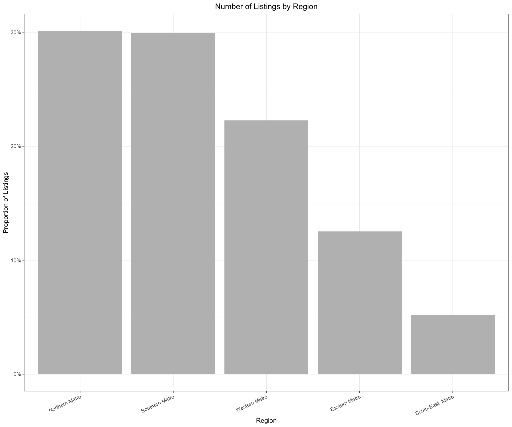
Exercise 7: Putting the plots together¶
(a). Use the code below to combine the plots from the exercises above. Replace PLOT_ONE, PLOT_TWO, and PLOT_THREE with the plots you created in Exercises 4, 5, and 6.
combined_plot <-
PLOT_ONE /
(PLOT_TWO | PLOT_THREE) &
theme(legend.position = "none")
(b). Save this combined plot as a PDF file using the ggsave() function. You can specify the file name and dimensions using the filename and width and height arguments.
ggsave("YOUR_FILE_NAME", width = 12, height = 8)
Solution
# (a)
# Combine them into one layout
combined_plot <-
price_hist /
(region_bar | scttr) &
theme(legend.position = "none")
combined_plot
# (b)
# Save the combined plot
ggsave("combined_price_plots.pdf", plot = combined_plot, width = 12, height = 8)
Exercise 8: Synthesizing the Findings¶
If you were presenting these results in a business meeting, how would you explain the key takeaways? Structure your summary to include:
- What you analyzed (data, variables)
- What you found (key insights from the visualizations)
- What decisions could be made based on this information?
Solution
Here’s one possible (long) answer:
What We Looked At
We analyzed dwelling listings from Melbourne to explore three key questions:
- Where are dwellings being listed, and how does the volume vary by region?
- How do prices differ between dwelling types (Houses, Units, Townhouses)?
- How does distance from the CBD relate to dwelling prices?
What We Found
Listing Activity by Region:
- Some metro regions (e.g., Northern and Western Metro) had a larger share of listings than others.
- Presenting these as proportions made the comparison clearer, especially for less active regions.
Price Differences by Dwelling Type:
- Houses had the highest prices on average and the widest spread.
- Units were more affordable and tightly clustered in price.
- Townhouses sat inbetween.
Price and Distance from the CBD:
- Prices generally decline as distance increases — in a relatively linear way
- The quadratic line and non-parametric line do not suggest strong non-linearities
What This Helps Us Understand
These visuals don’t tell us everything, but they provide a starting point for smarter conversations:
- If you’re pricing or positioning properties, it’s helpful to understand how type and location shape price expectations.
- Regional variation in listing volume could flag where market activity is strongest — or where supply may be tight. That’s worth exploring further.
- The price–distance relationship aligns with what we might expect: proximity adds value.